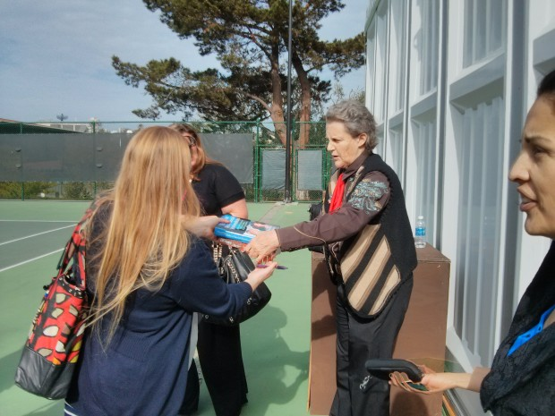

{kind=link}

Grandin signing one of her books after giving a presentation on the strengths of the autistic mind.
Photo by Matt Davenport
The first clue that I was wrong was that I had a knee-jerk reaction. Nu uh, Temple Grandin, I thought, you can too learn algebra! Sitting inside a gigantic fancy tent at the Hyatt Regency in Monterey, Calif., I soon learned that my impetuous disagreement was based on one simple fact: I knew next to nothing about autism.
On Jan. 24, Grandin was speaking about the strengths of autistic minds to a crowd of several hundred. To be clear about it up front, the following discussion pertains primarily to children with milder forms of autism. These are children who can speak and have average intelligence quotients, if not higher. Basically, Grandin said, these would be the kids people called nerdy, geeky or quirky when she was younger.
“I’m getting worried about these quirky kids,” Grandin said. “I see too many quirky kids going nowhere.”
But she also talked about how many people in Silicon Valley not only had autism spectrum disorders, but also very good jobs.
Her point was we need to be more invested in helping children on the spectrum secure jobs some day. You do this, she said, by spending more time developing their strengths and less time harping on subjects they may not ever have success with.
“You gotta know algebra to be a diesel mechanic?” she asked. “That’s a pile of malarkey.”
She said that she simply wasn’t wired to learn algebra. Regardless of whatever Malcolm Gladwell claimed, Grandin said, no amount of practice or education would result in her mastery of the subject. That’s when I became incredulous. Temple Grandin is one of the most remarkable minds of our time, I thought, she could totally whoop on some algebra.
But then she went on.
“That part of my brain is filled with water,” she said, showing the brain scan to back it up. “My math department pretty much got trashed.”
It’s a little embarrassing, but before that moment, I didn’t know (1) that could happen at all or (2) a specific difference in brain physiology would have very specific consequences in the abilities of a person.
This got me thinking: could scientists use brain scans to accurately pinpoint what a child’s strengths are going to be?
To find out, I called Teresa Iuculano, a postdoctoral researcher at the Stanford Cognitive and Systems Neuroscience Laboratory who is among the first to study the strengths of the autistic mind using functional MRI, or fMRI, brain imaging.
“You should really think about the brain of a child with autism as a brain that uses resources in a different way,” Iuculano told me.
Comparing brain scans taken with fMRI technology highlights how brain activities diverge between typically developed children and children with autism, but Iuculano said we don’t yet know enough about the mind to simply scan a random kid and determine what he will or won’t be good at (the prevalence of autism is five times higher in boys than in girls according to the CDC, so I played the odds in picking a gender there — no disrespect intended).

An fMRI scan highlights which portions of the brain are engaged in an activity or process.
Image credit: John Graner, Walter Reed National Military Medical Center
“I think it’s very useful to know that the brain is wired differently or is organized in a different way. But, at this stage, it’s not sufficient,” she said.
This doesn’t mean, however, that autistic students aren’t receiving any individualized education. After Grandin’s talk, I spoke with a mother in the audience whose 9-year-old son has autism. Guadelupe Silva, who came to the U.S. from Mexico in 2001, attends conferences like these so she can translate the information and resources into Spanish for migrant families in her community.
Silva told me that her son has what is called an IEP, or individualized education program, at his school. The IEP is a document that outlines the unique goals that both a teacher and parent expect to help a child realize.
“I know how the teacher is working with him and how I can help,” she said. “I was inspired that I could see my son can learn to spell.”
Now, I’ve been fairly critical of the education system in the past, so I definitely need to give it credit here. During Grandin’s talk, I was worried that, since I had no idea how to cater to the individual learning needs of an autistic child, neither would anyone else. Fortunately, the great majority of the world operates without needing my knowledge or blessing.
IEPs, however, are still based on state standards, said Todd Riddick, a resource specialist in the Pajaro Valley Unified School District in Watsonville, Calif. Riddick, a 32-year veteran, works with kids that have learning disabilities that usually are not on the spectrum, but he said that high-functioning autistic children would also be in his group. And these children are still expected to pass algebra by the end of high school.
As I continued talking with Riddick about IEPs and algebra, he explained the school’s goals serve a broader purpose. I realized I was missing the forest for the trees with my fixation on algebra.
Resource specialists work with individual students or small groups, as suggested by the I in IEP. But Riddick says their aim is to help the individuals comfortably spend as much time as possible in the mainstream classrooms, among their classmates, learning how to succeed as part of a larger group.
“We’re really teaching them to be functional,” Riddick said, “and basically trying to get them to be as independent as possible.”
For instance, for those with more severe autism, he said, independence may mean living with a caregiver in a group home. Others could find jobs after high school.
And still others go on to college. He told me about a student he caught up with recently that had been diagnosed with autism after leaving his class. She told him that she had just started college. When he asked where, he was expecting she would say a nearby community college.
“She asked me if I had heard of UC Davis,” Riddick said.
So to some degree, parents and schools are already doing what Grandin envisions, working with children as individuals to best prepare them for the future. As more people learn about taking an individualized approach through the efforts of people like Grandin, Silva and Riddick. Studies like Iuculano’s can help steer and reinforce that education with science. And with companies like SAP now making a concerted effort to hire more people on the autism spectrum, things are headed in a positive direction.